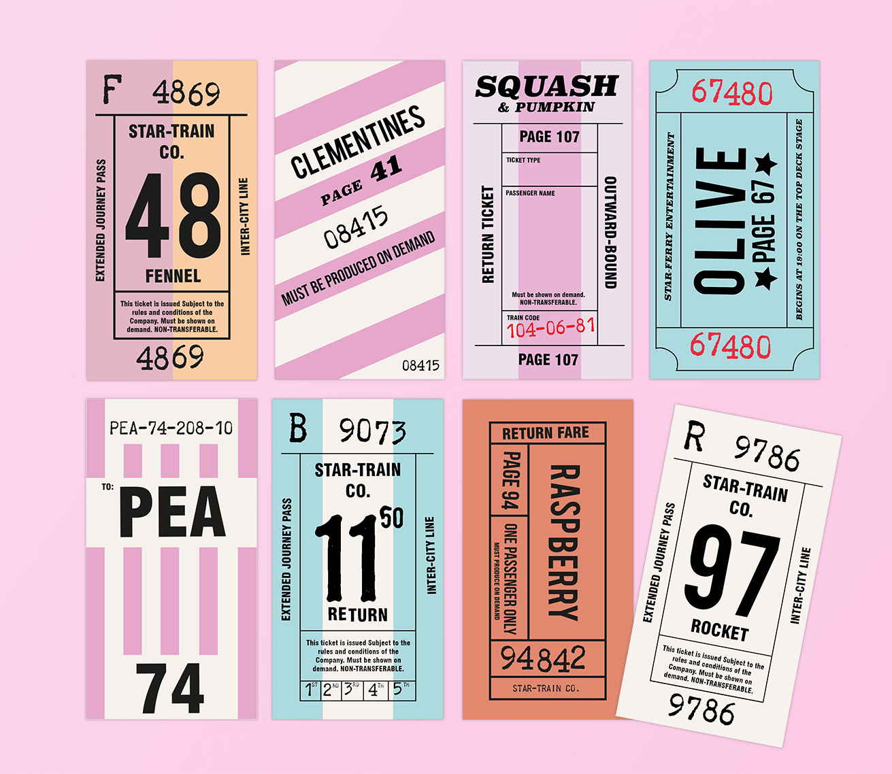

Recipes I
Have Found.
an ode to recipes scrawled on scraps of paper.
| project type | skills used | key words |
| University Project | Book Design / Illustration / Photography | Food / Travel / History |

| discovering recipes | one |
|---|---|
| Cooking is a practice which often relies heavily on passing on recipes, techniques and ideas from one person to the next. Old family recipe books are littered with scrawled notes in the margins and recipes torn out of magazines stuffed between the pages. Inspired by this notion, the forms the recipes in this cookbook take reflect their possible imagined origin, connoting the process of travelling and picking up on ideas from many different sources. | |
| discovering recipes | two |
|---|---|
| I examined Sally Clarke’s writing, noting the places she travelled to, the origins of the dishes she created and her stories of collecting recipes from the strangers she met all over the world. To reflect her stories, I designed the ingredient lists and methods of each recipe to appear like found printed ephemera which are stuck, scrapbook-like, into the cookbook. | |
How did you learn how to cook?


| discovering worlds in scraps |
one |
|---|---|
| A letter from an imaginary Turkish hotel, a telegram sent overseas, stamps, stickers and tickets from far off places. Each piece tells a different story about the experiences and locations which helped to build the recipes. I curated folders and folders of images of historical design from across the world for this project, finding ways to pay homage to different styles whilst creating a consistent voice with controlled colour palettes and type choices. | |

| looking through time | one |
|---|---|
| Whilst some of the elements have more clear historical design influences than others, they all have a sense of retro-inspired timelessness: being from somewhere in the past which you can't quite place. I was careful to spend time examining how design from different countries and time periods actually appeared, rather than how I thought they might. This research phase, which continued throughout the project, was incredibly informative and interesting. If there’s one thing I love more than design, it’s design plus history. | |